Patchwork with Coexisting Cellular Automata

Note: This post was originally a short technical article I shared on the Wolfram Community forum. For an interactive experience with live code or to download this text alongside the source code, please visit the original post here.
Introduction
At the 2025 Wolfram Summer School, while advising on a project about collaborative decision-making using cellular automata (CAs), I spent some time thinking up different possible setups to get CA rules to interact with each other and perform "negotiations". We considered several setups, including using CA state cells to represent a distribution of opinions in a society, and tried various schemes in an attempt to evolve rules that would reliably yield "consensus" states.
One approach that I did not have time to dive into but that showed promise was to represent agents as rules confined to specific, strictly different regions in space, but able to interact with each other where their boundaries touch or are close to one another. Setups like this will be the subject of this short essay.
Here's a teaser of what we're working toward: Programs that operate on a cellular automaton state arrays by applying a list of cellular automata rules to a list of non-overlapping regions of the state, such that each defined region is subject to its own dynamics, determined both by the region's assigned rule and the dynamics near the region boundary.
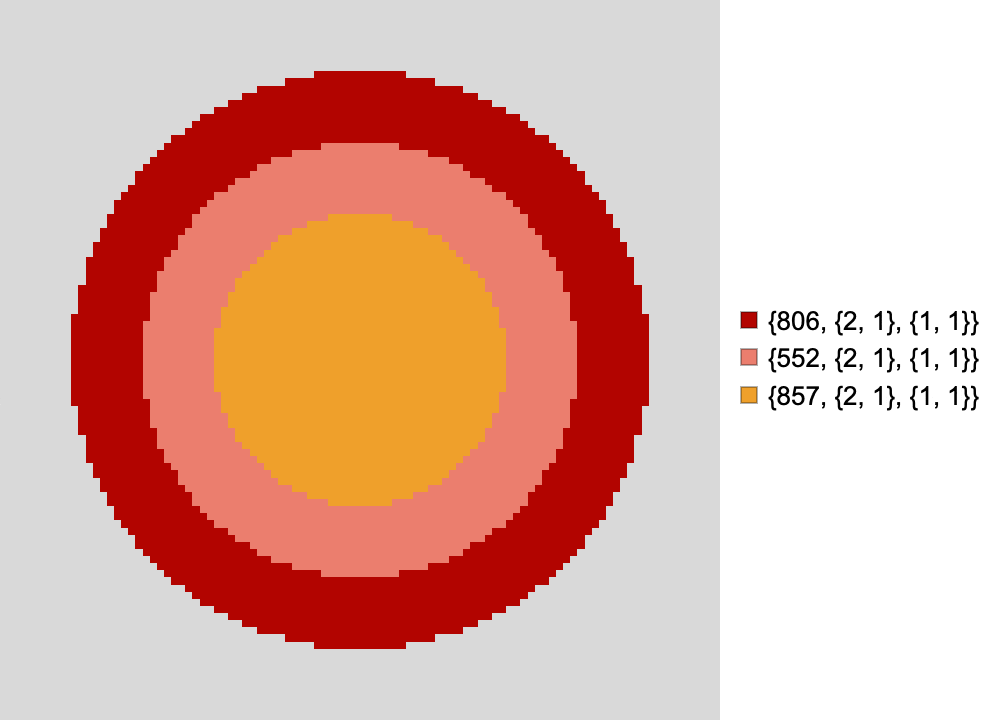
Cellular automata with custom boundary conditions
We'll work our way up to CAs operating in parallel on non-overlapping regions of space. But first, it'll be helpful to review some of the basics.
One-dimensional CAs
Natively supported CA boundary conditions
In Wolfram Language, cellular automata default to having periodic boundary conditions.
Elementary cellular automaton trajectory with periodic boundary conditions:
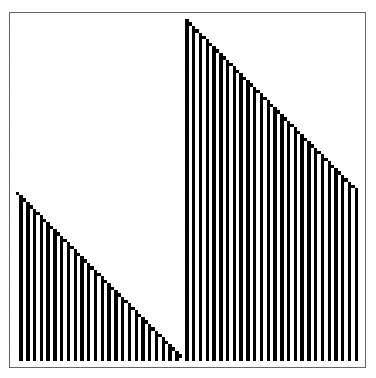
Notice the ripple cascade that wraps around horizontal space as it leaves to the right and simultaneously enters to the left.
The natively supported alternative to periodic boundary conditions in the CellularAutomaton function is to have CAs running on an infinite canvas.
Elementary cellular automaton trajectory on an infinite canvas:
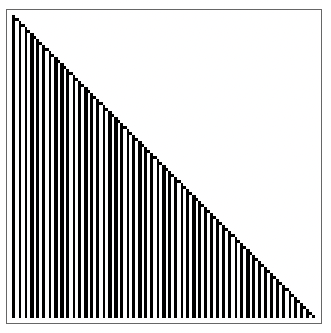
Here, the width of the state array is not fixed. In this case, the ripple cascade simply propagates outwards forever, uninterrupted.
The system we are envisioning requires that we implement custom boundary conditions, which there is no built in support for at the moment as far as I can tell. So how can we get there?
Confining CAs to regions in space
To confine a rule to a spatial region within a CA state, the simplest general approach I can think of is to apply the rule to the full state, but discard all changes to the state outside the rule's assigned region using a region mask. For example:
Trajectory of a rule 30 CA confined to a small region of the simulation space:
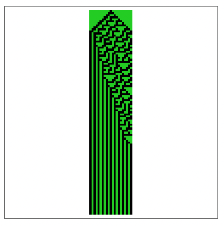
In the plot above, the green region represents the spatial domain of the automaton rule. Changes made to the state by the rule will only take effect inside the green region.
Proceeding this way means that although the green automaton is unable to make changes to cells outside the green region, green region cells near the border still "sense", and are affected by the state of cells on the other side of the border. If a green-region cell's neighbourhood contains cells from different regions, those cell states are used to determine the new cell state just as they would usually be. What this achieves is making the automaton region boundaries porous by default. The dynamics in the green region are affected by the local dynamics outside of the green region.
In the present example, the background is held constant and uniform. But there's not reason it has to be. If the background were heterogenous and dynamic, our setup would work just as well, though the dynamics in the green region would be different as the state evolution would be subject to different kinds of interference from local background activity. We'll return to this point later.
Another important clarification is that while in the simulations above, the chosen rule is confined to a region with a constant spatial boundary, the simulation itself is still operating in a periodic space. This distinction is essential because it means that cells on the periphery of the state array are still considered adjacent to cells on their opposite sides. In the example above, the left and right sides of the state array are still glued together. If a rule's assigned region were to span from one end of the state to the other, it would be possible for event cascades to wrap around.
Trajectory of a rule 30 CA confined to a region that wraps around the periodic boundaries of the simulation space:
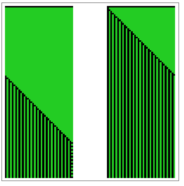
Removing spatial periodicity
To also get rid of the periodic boundary conditions of the space itself, my suggestion is a bit hacky but functional: Pad any starting CA state with enough zeros in all directions to prevent periodic interaction at the edges of the state array, compute the next step, and trim the resulting array so as to recover the original dimensions. Repeat as needed. Padding by the automaton neighbourhood range is easy and guaranteed to be enough (the minimum required padding depends on the neighbourhood used by automata in the simulation, so I won't discuss it here).
Cellular automaton trajectory with a rule 30 CA confined to a visually identical region as in the previous example, but that does not wrap around the periodic boundaries of the simulation space:
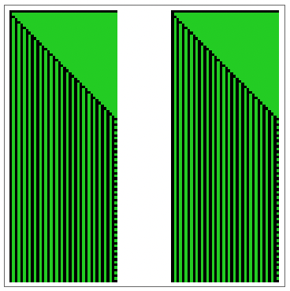
Now, on the left and right sides of the state array, the background is effectively taken to be all zeros, so the rightmost cascade can never wrap around to the left, and the simulation space is fixed. In this specific case, the change also causes both green regions to start with the same initial conditions. As the neighbours to the left of the leftmost cell of each green region at t=0 are now considered to be zero, the initial conditions cause two cascades instead of one.
We chose to have uniform and constant zero boundary conditions for the entire simulation space, but as before, we could have done otherwise. Here is an example in which these boundary conditions are made random and dynamic.
Rule 30 CA trajectory confined to a region subject to random and dynamic boundary conditions:
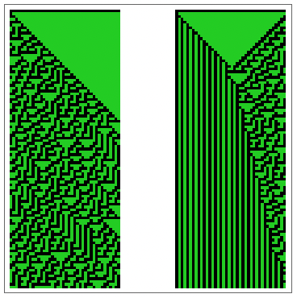
Here, the states of the cells that make up the boundary change at random, affecting the dynamics of the green automaton, although the boundary itself does not move around. The boundary is fixed in space, but not fixed in state.
Two-dimensional CAs
Now that we've established some techniques for confining 1D cellular automata to specific regions, the natural next step is to apply these ideas to 2D CAs. Good news! The techniques we just discussed for 1D CAs work just as well in 2D, and even in higher dimensions.
Here's a setup in two dimensions that confines a totalistic 9-neighbour CA to a square region of the simulation space.
Dynamics of a totalistic 9-neighbor CA confined to a square region of the simulation space:
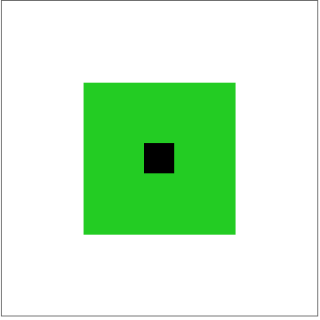
Just as before:
- The green region represents the spatial domain of the automaton rule.
- The boundary is porous, so nearby activity outside the green region can affect green region dynamics.
- The boundary conditions for the whole simulation space are still periodic by default, but can be fixed or controlled using the masking techniques I described for 1D CAs.
Since the green region is determined by a binary mask array, we can easily try almost any setup you can think of painting out on a canvas. In the next few examples, I use a region with an inner isolated part with constant zero boundary conditions, and an outer part that connects every edge of the simulation window. The inner part will be undisturbed by any changes to the global, simulation space boundary conditions, so its dynamics can be thought of as a control in our experiments.
Here's a setup where the green region allows the dynamics to wrap around along each axis.
Totalistic 9-neighbor CA dynamics constrained to a region with an isolated central component subject to fixed zero boundary conditions, and a surrounding component subject to the periodic boundary conditions of the simulation space:
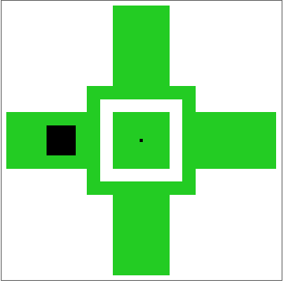
You can think of the space as wrapping around a torus like this:
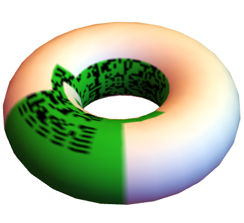
Here's a setup with the same green region specification, but with constant zero boundary conditions applied to the simulation space.
Totalistic 9-neighbor CA dynamics constrained to a region with an isolated central component subject to fixed zero boundary conditions, and a surrounding component also subject to fixed boundary conditions:
Setting constant zero boundary conditions turns the boundaries of the simulation window into smooth, solid, impenetrable walls, preventing the dynamics of the green CA from wrapping around.
Finally, here's an example in which these boundary conditions are made random and dynamic.
Totalistic 9-neighbor CA dynamics constrained to a region with an isolated central component subject to fixed zero boundary conditions, and a surrounding component subject to random dynamic boundary conditions:
In this last case, the dynamics in the outer part appear quite random.
Three dimensions and above
Just to show that it's possible, here's a complicated 3D example using a state generated by another 3D CA as the automaton region mask.
Dynamics of a 3D CA confined to a complex 3D region:
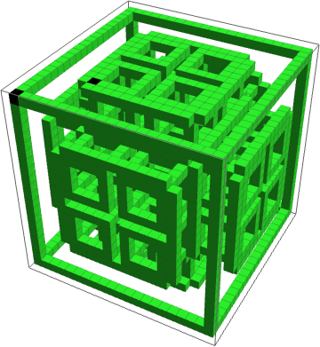
And here's a simulation of the process in six dimensions, just for fun, although there's no longer a simple way to visualize its output, so all I'll show you is this preview of the final state array:
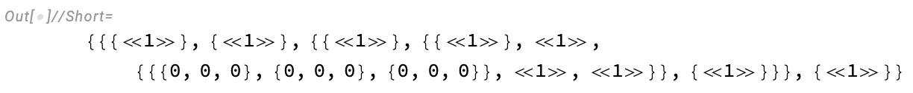
Bonus: miscellaneous interesting examples
Mazes
First, generate a maze to use as a mask:
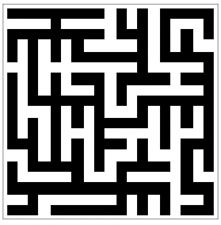
Compute the trajectory of a 9-neighbour 2D totalistic CA confined by the mask:
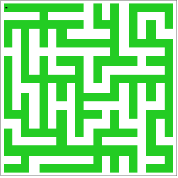
Other complex shapes
Define an organic shape shape to use as a mask:
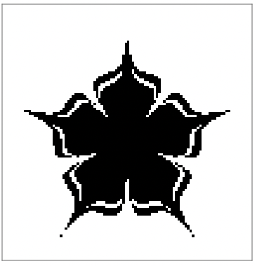
Compute the trajectory of a 9-neighbour 2D totalistic CA confined by the mask:
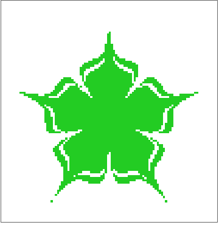
Review
In this section, we explored techniques for confining cellular automata to specific spatial regions within a larger CA system. In summary:
- The CellularAutomaton function supports two default boundary conditions, periodic and infinite.
- To confine a CA rule to a specific spatial region, we can apply the rule to the full state, but discard all changes outside the rule's assigned region using a region mask.
- To remove the periodic boundary conditions of the space itself, we can pad the initial state with enough zeros in all directions to prevent periodic interaction at the edges, compute the next step, and trim the resulting array back to the original dimensions. This effectively simulates constant zero boundary conditions.
- By controlling the padding values we can set different kinds of global boundary conditions. Padding with ones will simulate uniform and constant one boundary conditions. Padding with zeros and ones in different places will result in non-uniform boundary conditions. In general, boundary conditions must be defined with valid cell states: zero or one for two-state CAs, and zero through k-1 for k state CAs.
- We can also make the boundary conditions of the simulation space dynamic and heterogeneous, for example, by defining a global boundary mask that frames the simulation window, and setting cells within the boundary it defines to random states at every step of the simulation. Any CA whose spatial domain is close enough to the global boundary mask will see its dynamics affected by the random global boundary conditions.
- These techniques can be applied to 1D and 2D CAs, but also to CAs in higher dimensional spaces.
Coexisting Cellular Automata:
Running CAs in parallel in separate regions of space
How does it work?
We can use the tools developed above to perform simulations in which several CA rules operate in parallel on non-overlapping regions of the simulation space. I'll refer to simulations like these as Coexisting CAs, and since I'm going to want to experiment with Coexisting CAs a lot, I'll define a CoexistingCellularAutomata function to automate the process of setting up and running these simulations. The full function definition can be found in the Code Initialisation section at the end of the Wolfram Community version of this article.
The core steps of the process are:
- Define a list of CA rules and an initial state for the entire simulation space.
- Create an array that specifies the spatial domain for each CA rule, where each cell in the array corresponds to the index of the rule that should be applied in that region.
- Generate binary masks from the spatial domains array to isolate the regions where each rule should be applied.
- Define boundary conditions for the overall simulation space, which can be constant or dynamic.
- Apply the CA rules to their respective domains, clip the results to the domain masks, sum the resulting state arrays, and apply the global boundary conditions.
Computing a single step of a Coexisting CA simulation
This next code snippet demonstrates the process I settled on in my final implementation to compute a single Coexisting CA simulation step. I've included comments to describe the process alongside the code, and calls to Echo and EchoFunction to show key variables generated or used in the throughout its execution.
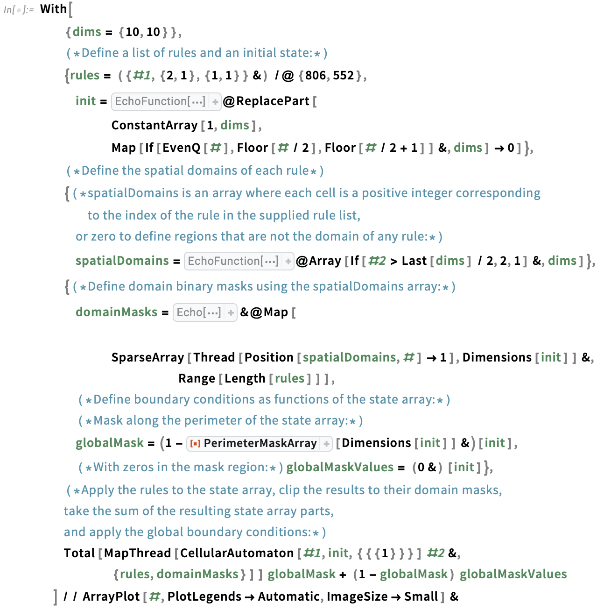
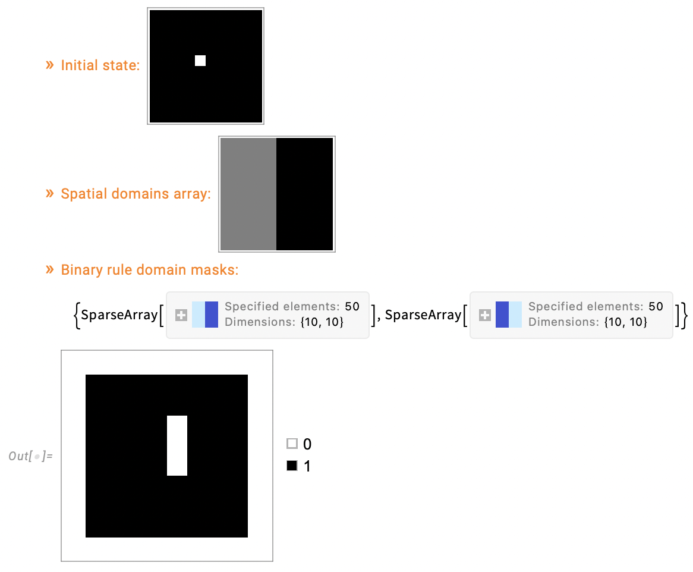
Performing a full Coexisting CA simulation
The CoexistingCellularAutomata function makes simulations of interacting CAs quite easy to set up and perform. Let me show you.
I'll start by defining my simulation parameters. For this example, I'll pick 10 rules at random. Each rule domain will be assigned its own colour.
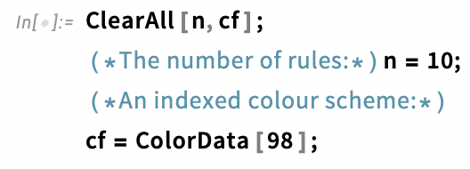
Pick some 2 colour range 9-neighbour totalistic CA rules at random:
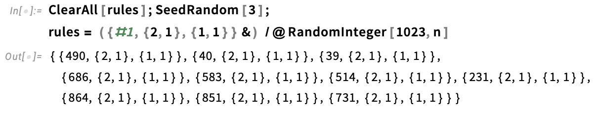
I'll set constant zero initial conditions across the initial state.
Define an initial array representing the state at t=0:
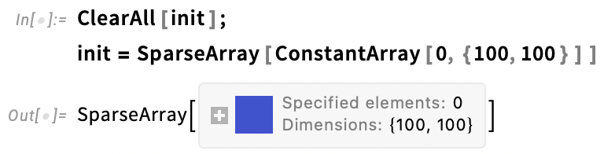
The spatial domains of each CA rule in the simulation must be specified using a single array of integer values corresponding to indices of the supplied rules in the rule list, or zero, meaning "no rules apply here".
We can arbitrarily partition the simulation space and assign whichever parts we choose to whichever rules we like. Here, I've used a helper function called generateVoronoiCASpatialDomains (defined in the Code Initialisation section of the Wolfram Community version of this essay) to generate the rule domain definitions array.
Define the spatial domains of each rule in the simulation space:
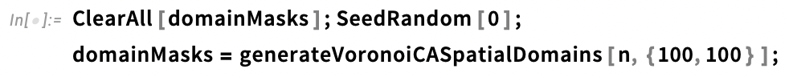
Preview the domain masks:
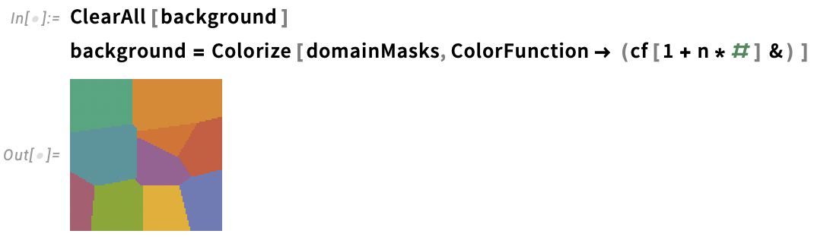
To perform a simulation, simply supply the list of rules, domain mask, initial state, and number of steps to the CoexistingCellularAutomata function.
Perform a simulation using CoexistingCellularAutomata:
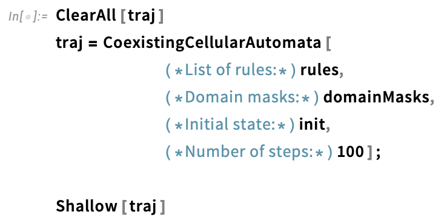
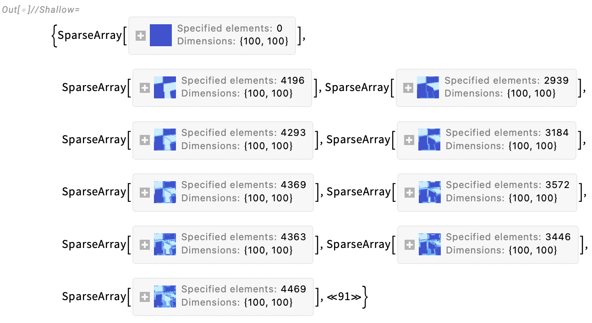
The result is a list of arrays representing the sequence of Coexisting CA states, each of which we can plot to make the frames of an animation of the full simulation trajectory.
Animate the resulting simulation of interacting CAs, using the masks to colour the frames:
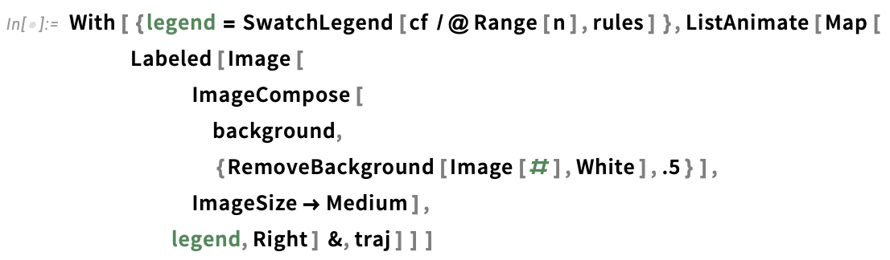
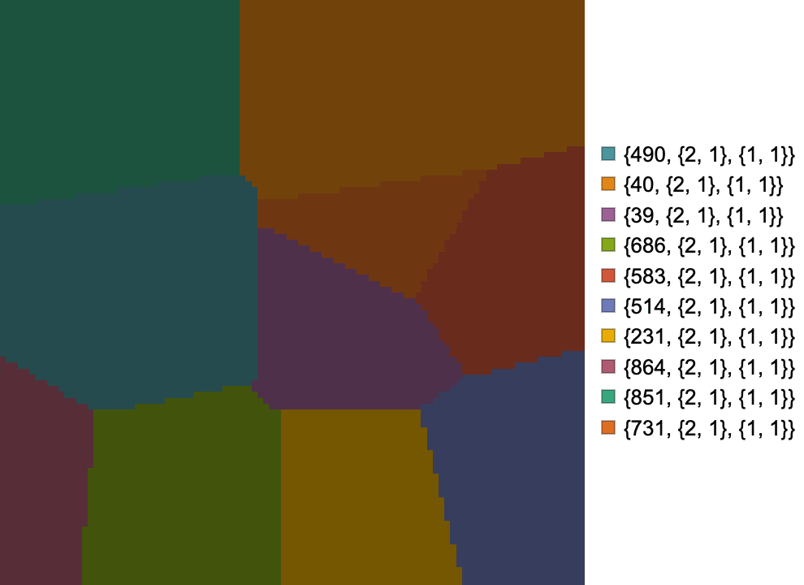
Using images as Coexisting CA domain Masks
The CoexistingCellularAutomata function works with arbitrary valid rule domain definitions. Any array of positive or zero integer values is a valid rule domain mask. This means we can use posterized images as rule domain specifications.
For this next example, I posterized a webcam selfie so as to only have pixel values of 0,1, or 2 and used the resulting image as the domain mask specification in CoexistingCellularAutomata. In the simulation, these values respectively correspond to neutral territory, the domain of the first rule, and the domain of the second rule. I picked two totalistic 9-neighbour 2D CA rules to use at random:
Define a mask to use in the simulation:
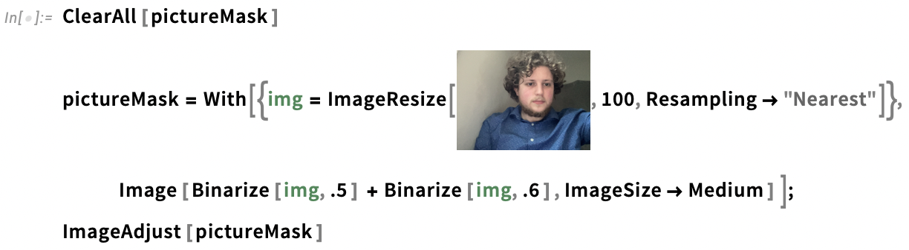
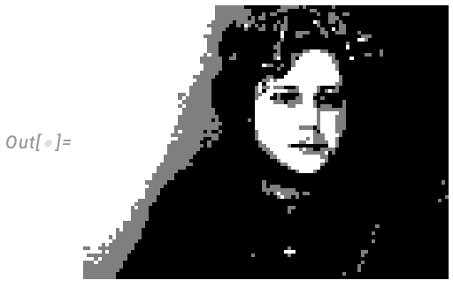
Set up and run a 20 step simulation with the chosen rules, rule domains defined by the image mask, and an initial condition array made of all zeros:
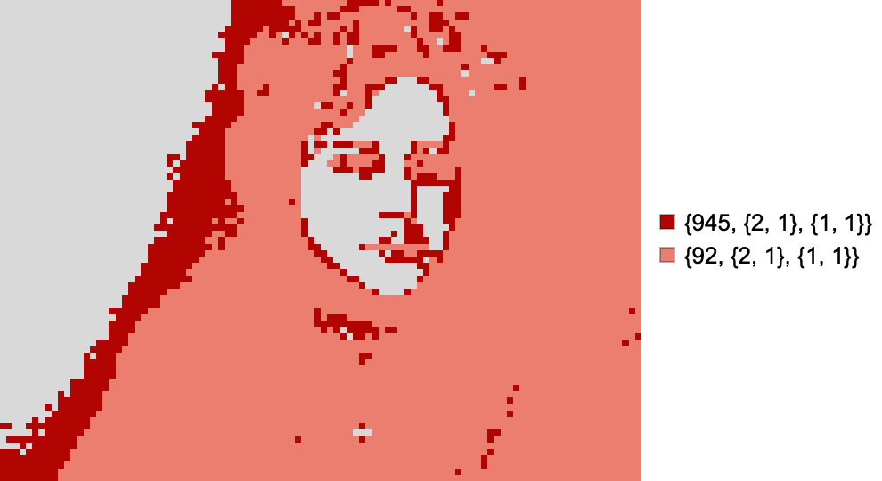
Global boundary conditions of Coexisting CA simulations
By default, CoexistingCellularAutomata assumes periodic boundary conditions on the simulation space, as in this trajectory of rule 10 and rule 90, where the leftmost cells of the array interact with the rightmost cells:
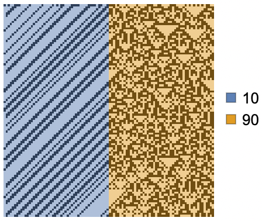
As a convenience to the end user, CoexistingCellularAutomata also supports specifying global boundary conditions using the "GlobalMaskFunction" and "GlobalMaskValueFunction" options. As their names suggest, these options are designed to receive function arguments. These should be functions of the state array at any given time, though they can also be made to ignore the state array input.
The "GlobalMaskFunction" option defines the boundary of the simulation by returning a binary mask where 1s represent cells that can be affected by the chosen CA rules, and 0s represent cells that cannot. The specified function may also return a 0, signalling that no special global boundary conditions should be added. The "GlobalMaskValueFunction" defines the values inside the boundary region, and can return a constant cell state value, or an array of valid cell states. When these functions return arrays, the arrays must have dimensions as the state array.
To add constant zero boundary conditions on the left and right ends of the state arrays in the previous simulation, only minimal changes to the code are needed. By adding
and
to the CoexistingCellularAutomata function call, we restrict the rule domains to all cells other than those near the border, and set the excluded border cells to be equal to 0 throughout the simulation:
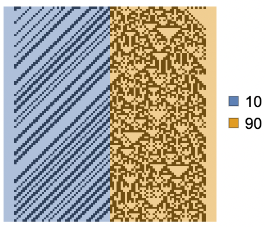
Because "GlobalMaskFunction" and "GlobalMaskValueFunction" expect functions, and these functions are computed for every step of a Coexisting CA simulation, it's also quite easy to set dynamic boundary conditions. If instead, we had specified the options
and
we would get random dynamic boundary conditions on the boundaries of the simulation space:
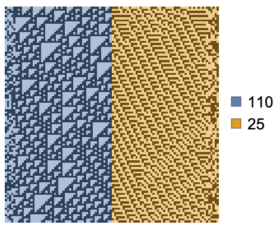
Closing thoughts
There are many directions this work could go. It's easy to imagine how the setups we've explored here could become the basis form a kind of toy model of artificial life in which the organisms are wandering cellular automata whose spatial domain boundary conditions themselves are subject to environmental and competitive pressures.
Another direction might be to modify the setups explored in this essay to allow multiple CAs to occupy the same spatial domains, and compete for dominance over these overlapping regions. This would require careful planning, as there are many possibilities for how such overlapping claims could be handled, and all will inevitably come with their own advantages and tradeoffs.
What would you do next? If you find this work interesting, and you'd like to discuss it, please feel free to reach out. I'm excited to continue exploring this topic and to see what can come of it.